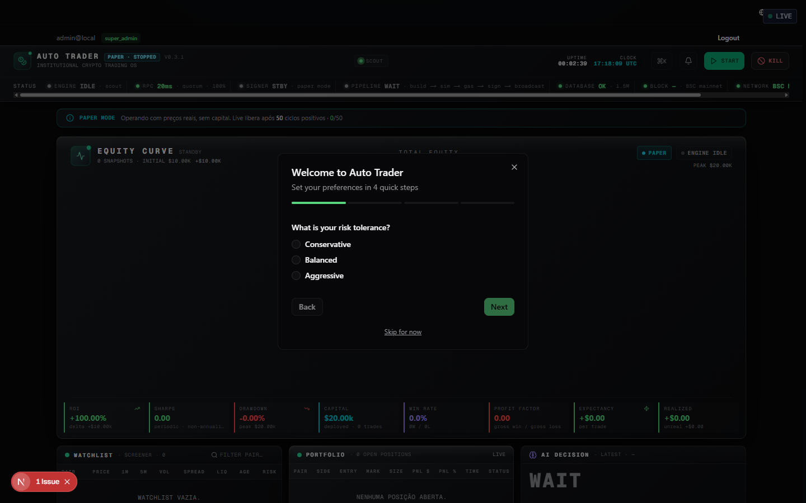
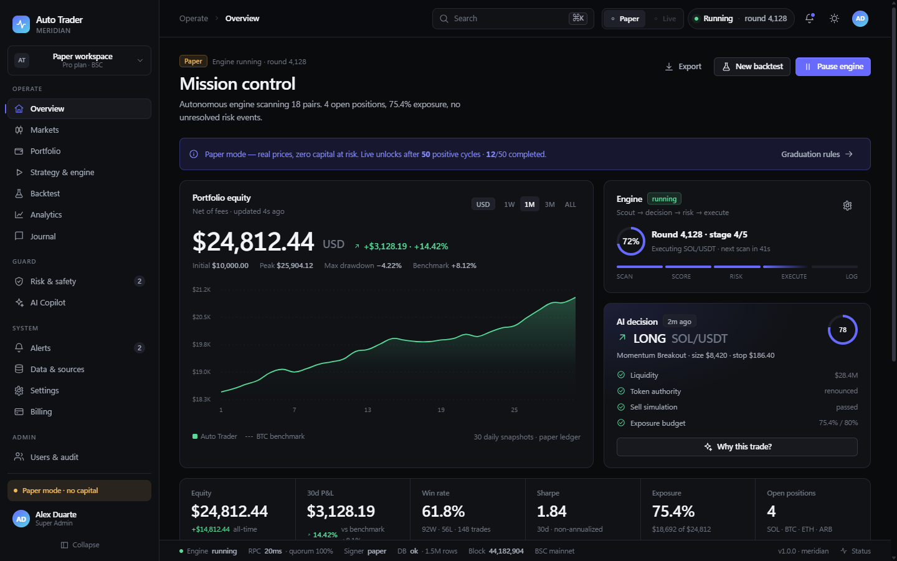
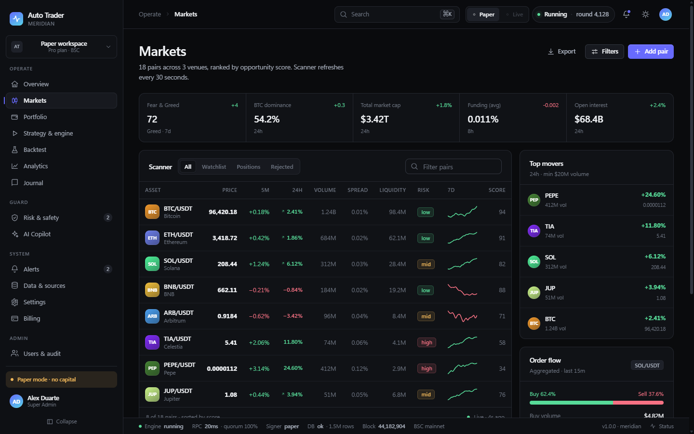
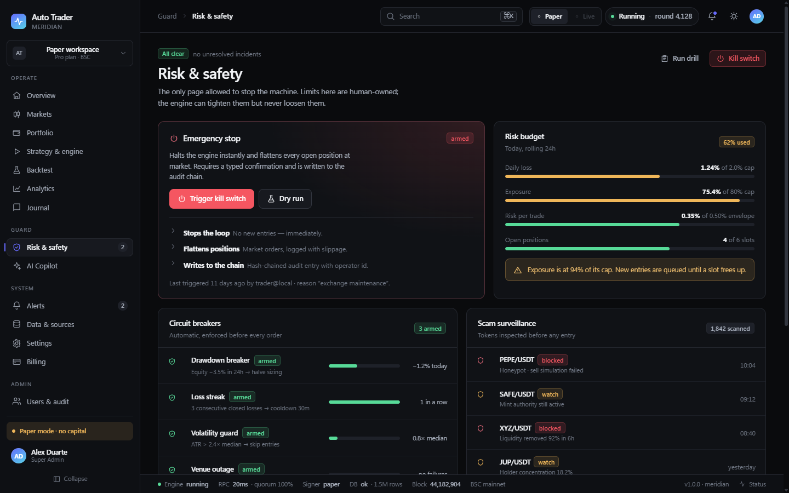
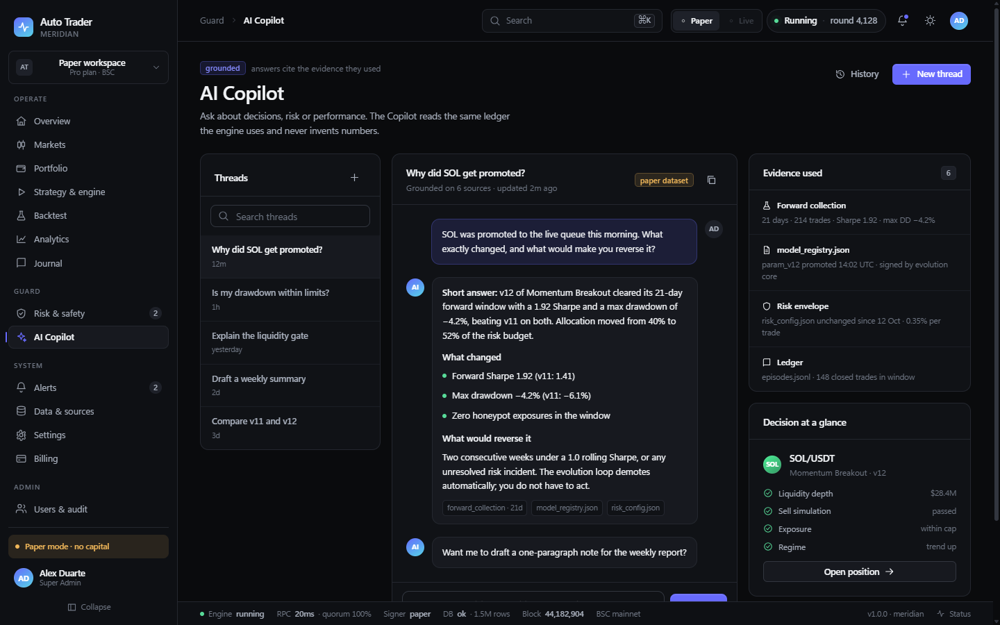

Um redesign completo de UI/UX para trading autônomo de cripto: 22 telas, um design system e um protótipo navegável.
Auditoria com navegador real, DOM e código. Sete problemas explicam quase todo o atrito.


Só risco e perda podem gritar.
Cada rota responde a uma decisão.
Tabulares, sinal verdadeiro, janela explícita.
Resumo → gaveta → página.
Posição, token, trade e rodada com URL.
Kill switch isolado, confirmação HALT.
“Por que?” é botão em todo lugar.
Ultramarine #5B6CFF. Verde e vermelho só para resultado.
Serif editorial no público, Inter no app, mono nos dados.
Overview
Markets · Token
Portfolio · Position
Strategy & engine
Backtest
Analytics
Journal
Risk & safety
AI Copilot
Só entra aqui o que pode parar algo.
Alerts
Data & sources
Settings
Billing
Admin
Landing
Pricing
Sign in · Sign up
Reset
Onboarding (4)
Rail de 256 px, topbar de 60, telemetria de 34, ⌘K espelhando tudo.
Alerta → posição · scanner → token · decisão → evidência · risco → parada.
7 estados por tela de dados: vazio, carregando, erro, offline, permissão, degradado, sucesso.



Tokens, tema claro, shell, primitivos, paleta.
Overview, markets, token, portfolio, posição.
Risk, copilot, strategy, backtest, analytics, journal.
Alerts, data, settings, billing, admin, landing.
Paridade funcional · deep links · 7 estados · axe sem violações críticas · 390 px sem overflow.
Dividir a home de 39 KB em rotas sem perder comportamento. Mitigação: inventário painel→rota e fase 1 atrás de flag.
design/prototype
22 rotas, dark/light, ⌘K
design/figcraft
14 frames editáveis + renders
design/docs
auditoria, conceito, páginas, DS, plano
Branch design/uiux-concept-v2 · v1.0.0 · 01 Nov 2026